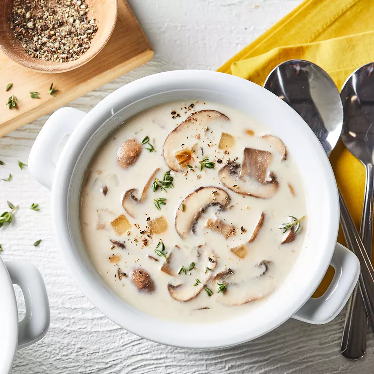

Mushroom Soup

Description
This mushroom soup is creamy and rich — it's one of my favorite soups of all time and it's so easy.
The long, slow caramelization of the mushrooms requires a little patience,
but it really unlocks their magical flavor, which is the secret to this mushroom soup.
Ingredients
- ¼ cup unsalted butter
- 2 (16 ounce) packages sliced fresh mushrooms
- 1 pinch salt
- 1 medium yellow onion, diced
- 1 ½ tablespoons all-purpose flour
- 4 cups chicken broth, or more to taste
- 1 cup water, or more to taste
- 6 sprigs fresh thyme, tied in a bundle with kitchen twine
- 2 cloves garlic, peeled
- 1 cup heavy cream
- salt and freshly ground black pepper to taste
- 1 teaspoon fresh thyme leaves for garnish, or to taste
steps
- Gather all ingredients.
- Melt butter in a large soup pot over medium-high heat. Add mushrooms and 1 pinch salt; cook until mushrooms release their juices, 5 to 10 minutes. Reduce heat to medium-low; continue cooking, stirring often, until juices evaporate and mushrooms are caramelized, 15 to 25 minutes. Set aside a few attractive mushroom slices for garnish later, if desired.
- Add onion to mushrooms; cook and stir until onion is soft and translucent, about 5 minutes.
- Stir in flour; cook, stirring often, to remove raw flour taste, about 2 minutes.
- Pour in 4 cups chicken broth and 1 cup water; add thyme bundle and garlic cloves. Reduce heat to low; simmer for 1 hour. Remove and discard thyme bundle.
- Fill blender halfway with soup. Cover and hold lid down with a potholder; pulse a few times before leaving on to blend until smooth and thick. Pour into a pot. Repeat with remaining soup.
- Stir in cream; if too thick, add a little chicken broth or water. Season with salt and black pepper.
- Divide soup among bowls; garnish with reserved mushroom slices and thyme leaves.
Back to Home